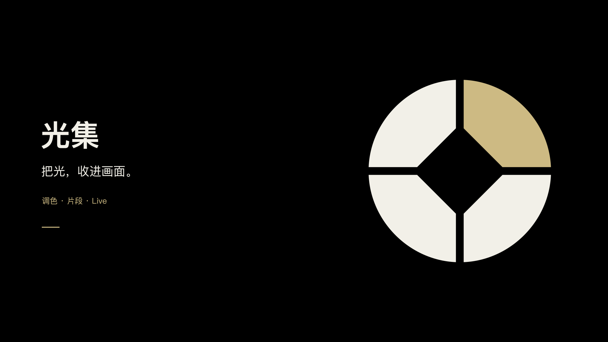
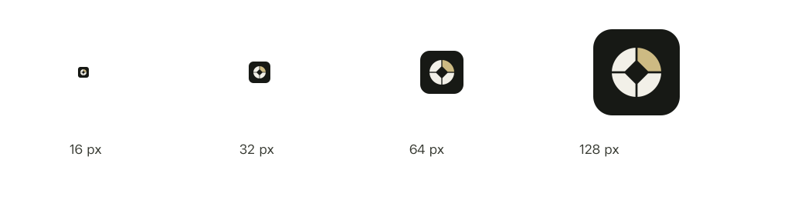
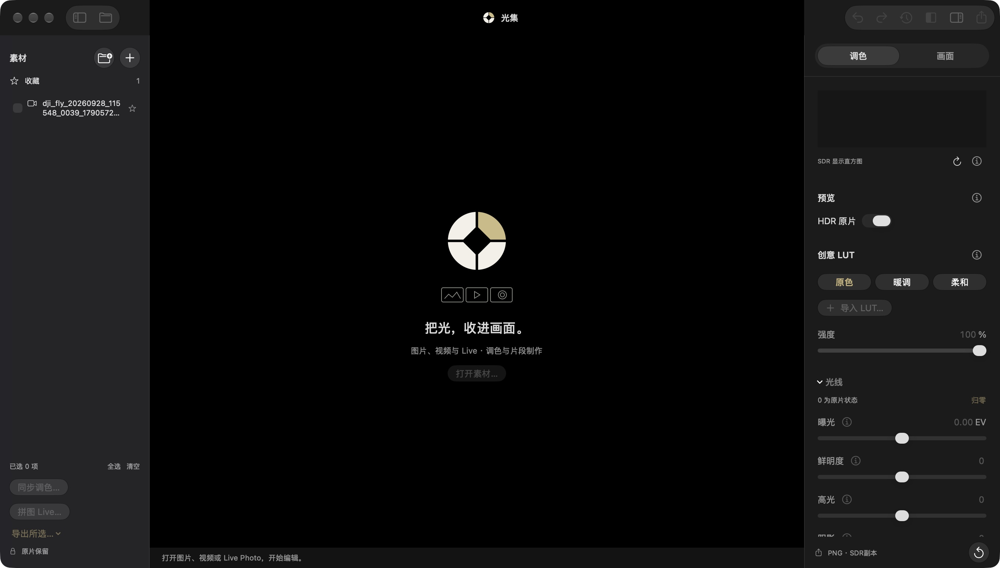

GUANGJI / VISUAL IDENTITY / 2026.10.05
把光，收进画面。
四片光圈围合中央透光孔，一片暖金代表光线与调色。沿用原有标志比例，扩展为 App 图标、工具栏标志、空状态与展示主视觉。米白、石墨灰和暖金让摄影内容保持主角。

1920 × 1080，纯黑 / 纯白背景；PNG 与 SVG 双版本，文字全部转曲。用于产品介绍页、发布封面和品牌展示。
标志与字标
中文版字标已经转为矢量路径，交付时无需安装字体。标志保留独立单色 / 白色版本。工具栏使用无底色图形，不额外叠加玻璃底板。
应用图标
当前 App 使用深色 .icns，包含 16、32、128、256、512 pt 的 1× / 2× 资源。浅色 PNG 是备用视觉导出，尚未配置为系统自动切换外观。

Apple 新版图标以 Icon Composer 组织分层材质。本包提供 1024 方形、未遮罩的 SVG 图层；当前 .icns 为平面兼容图标，尚未生成 .icon 或配置系统 Liquid Glass / tinted 外观。
空状态资产
同一个光圈，下方用照片、视频与 Live 的三种轮廓提示工作台支持的素材。插画透明，无动效，App 在未打开素材时使用深色版本。标题和操作按钮由原生界面渲染，不烘焙进图片。
已经接入的原生窗口

实机截图：工具栏使用 SwiftUI 矢量光圈，标题无额外玻璃底色；中央空状态使用品牌插画。截图时窗口未激活，因此部分系统控件颜色较暗。App 的 .icns 与空状态资源已打包，并通过 NSImage 解码与文件一致性检查。Dock / Finder 的缓存外观未单独截图验收。
色彩与字级
App 沿用 macOS 系统字体：工具栏 13 pt 半粗，空状态标题 20 pt 中等，说明 12 pt 常规。功能按钮继续使用 SF Symbols；品牌图形只出现在标题、空状态和应用身份场景。避免为每个按钮重复使用光圈装饰。
标准图形画布 128 单位；独立标志建议至少 24 px，工具栏为 22 pt。外部安全留白建议不小于画布的 1/8。浅色单色标志用于印刷与低彩场景，白色版本用于纯色深底。
颜色与用法数据
交付与维护
| 目录 | 用途 |
|---|
icons | 应用图标、iconset、尺寸检查。 |
layers | 后续 Icon Composer 分层来源。 |
key-visuals | 横版深浅色主视觉、1080 × 1440 海报。 |
illustrations | 可编辑 SVG 与高分辨率透明 PNG。 |
runtime | App 打包使用的资源。 |
exports | 透明标志 / 字标 PNG 与实际窗口截图。 |
重新导出：bash scripts/generate-brand.sh
构建 App：bash scripts/run-workbench.sh --build-only
所有品牌图形沿用原始光圈路径，使用本机 AppKit / CoreText 确定性导出；无需图片生成 API。导出脚本位于项目 scripts 中。UI 与品牌图片分开维护，未把产品截图当作 Logo。